| 首页 | 罪人 | 人格 | E.G.O |
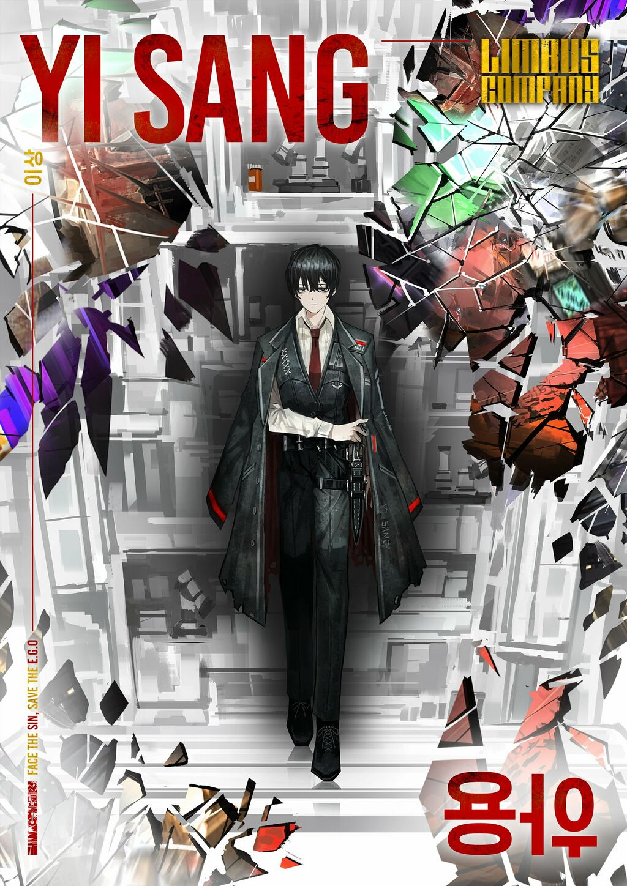 一号罪人 李箱 🪶，'박제가 되어 버린 천재'를 아시오? |
你知道“被制成标本的天才”吗？ 该罪人曾是翼中最年轻的首席研究员，相较于其他罪人，其拥有更为出众的智力。对于我们所选择的经理而言，与之进行日常交流或略显困难，尽管如此，过于明显地规避交流也会留下不稳定因素。该罪人偶尔会保持长时间的沉默，这是因为他正在脑海中进行一系列的思考；在这种情况下，我们建议您耐心等待。 原型：朝鲜象征派诗人、小说家李箱 |
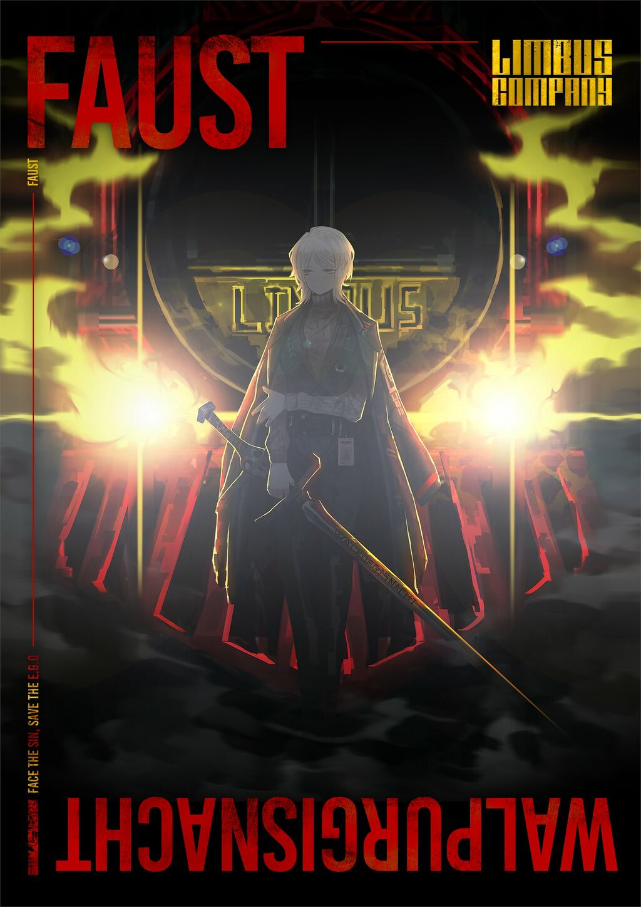 二号罪人 浮士德 👻，Es irrt der Mensch, solang er strebt. |
人只要奋斗就会犯错。 该罪人开发了边狱公司的巴士——梅菲斯托费勒斯的引擎。她声称在都市中，没有人能在智慧层面上与她相媲美，这话未必就是错的。也许在和经理您交谈的时候，您会发现她的态度高高在上，而这样的态度也许会败坏您的心情。由于该罪人举止傲慢，仿佛不在乎任何人，让她有所改善的可能性几乎为零。我们建议您只要应付一下，点点头就行。虽然她才智异禀，但我们尚不清楚如何利用她的才能。说不定，经理您能找到方法？ 原型：歌剧 《浮士德》 |
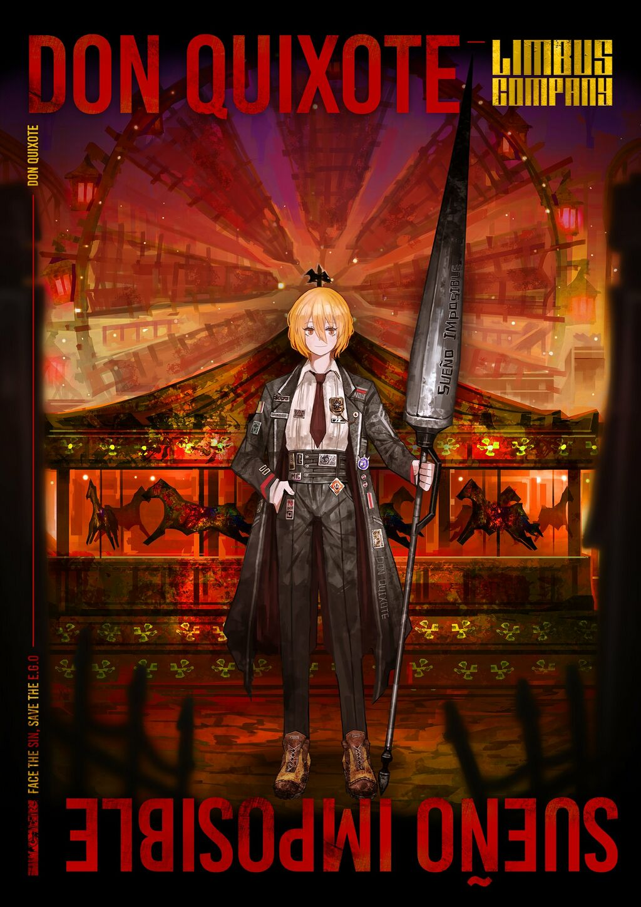 三号罪人 堂吉诃德 🎠，Por alcanzar la estrella inalcanzable! |
去触及那颗遥不可及之星！ 如果只以热情作为评判罪人资质的标准，该罪人无疑会拔得头筹。身为收尾人的狂热粉丝，她热衷于收集各种收尾人的相关纪念品，并将其装饰在全身上下。鉴于这种行为并不会对战斗产生实质性影响，因此无需特别对其采取措施。她对自身是正义的收尾人（真的有这样的存在吗？）一事深信不疑，并会做出像三流演员一般夸张的举止。为了使任务能够顺利进行，建议您配合她的节奏行动。 原型：小说《堂吉诃德》 |
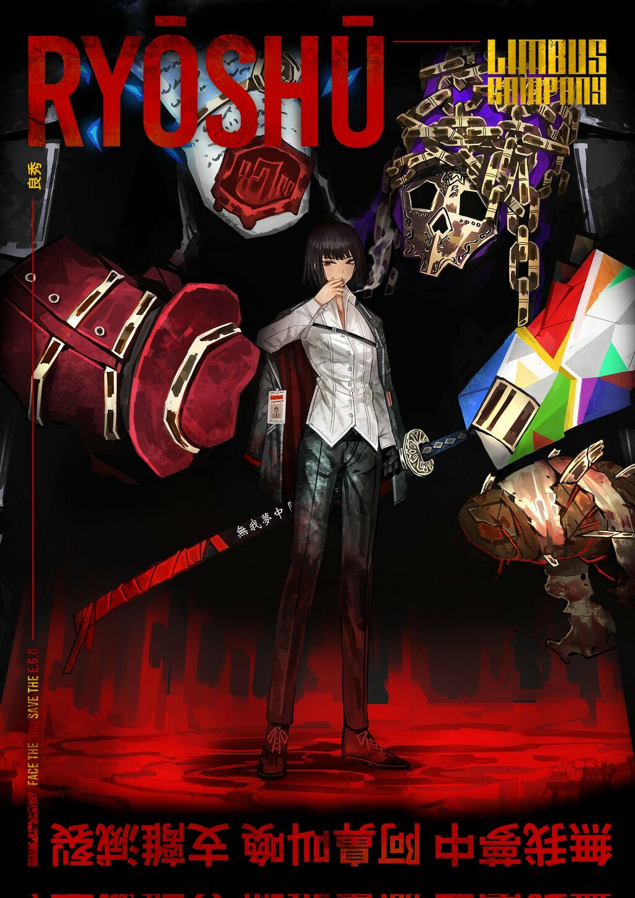 四号罪人 良秀 🚬，かいなでの絵師には総じて醜いものの美しさなどと申すことは、わかろうはずがございませぬ |
那些低劣平庸的画家，完全不懂得丑陋之美。 虽说每一位罪人都有其独特的信条，而尊重这些信条是经理应尽的义务。但……某些信条实在是令人费解。虽然该罪人平日里只是在一边默默抽着烟，唯有战斗时，她的眼中才会迸发出愉悦的神采。她认为只是在战斗中无谋地打碎对方的脑袋，是粗俗的行为，更是对艺术的亵渎。 原型：小说《地狱变》 |
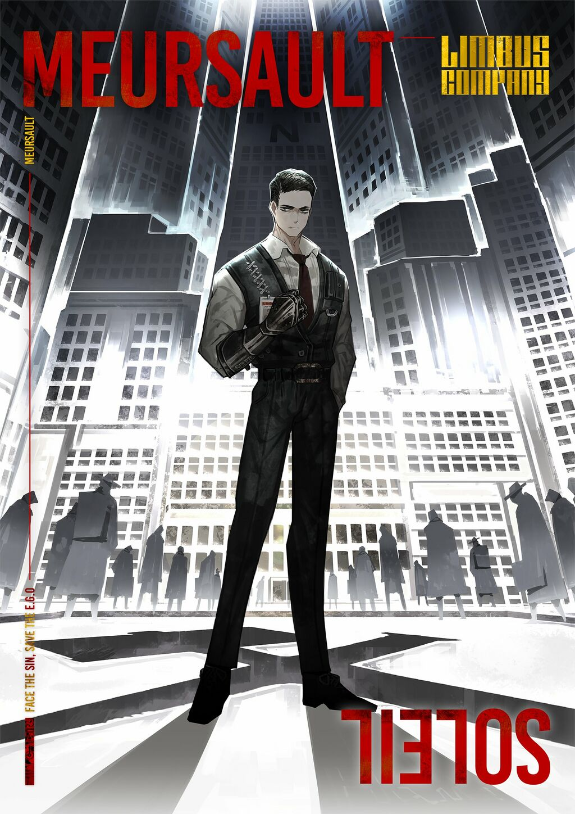 五号罪人 默尔索 🌇，Aujourd'hui, maman est morte. Ou peut-être hier, je ne sais pas |
今日，我杀了母亲，亦或是昨日？ 倾向于明确且简洁的指令，即不留下个人判断余地的命令。 原型：小说《局外人》 |
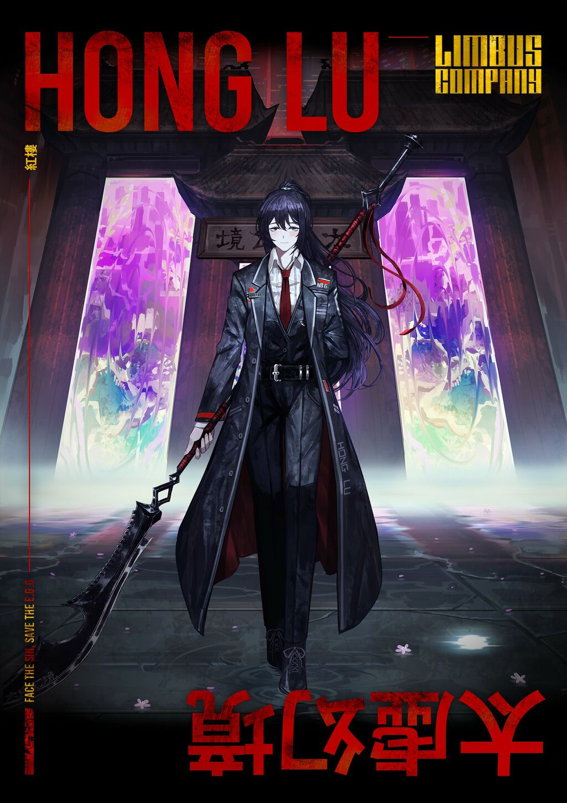 六号罪人 鸿璐 🔮，美中不足 好事多魔 |
美中不足 好事多魔 该罪人在成为我司的资产前过着富足的生活。因此，虽然他对自由有所向往，但也偶尔会在见到其他罪人制作的食物时显露出对底层文化的无知，并提出触碰其他罪人雷区的冒犯性问题。不过，由于其提问并非出于讽刺，而仅仅是纯粹的好奇使然，让罪人们为此大动干戈并非合适的解决方法。 原型：小说《红楼梦》 |
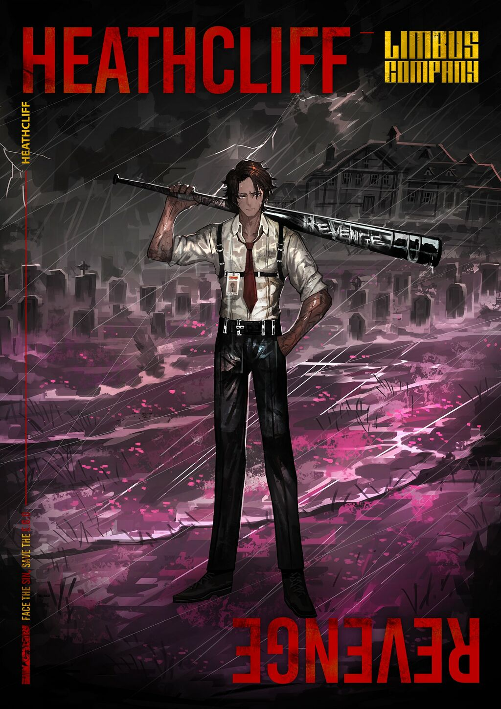 七号罪人 希斯克利夫 🌩，I have not broken your heart – you have broken it; and in breaking it, you have broken mine. |
我并没有弄碎你的心—— 是你自个儿把心揉碎了；揉碎了你的心，把我的心也揉碎了。 该罪人比起理论思考更偏爱实际行动。由于他丝毫不去掩饰自己的想法和感情，而是全部通过表情与话语加以表达，经理在与其建立联系的过程中可能会引发头痛（或是受到物理意义上会引发头痛的外伤……）希望您谨记在该罪人的思维模式中并不存在深入思考这一项。以防万一，如果出现长时间无法平息其愤怒的情况，请您联系人事部。正因为该罪人的思维模式愚钝且单纯，一旦您掌握其性格，处理起来就会变得十分简单。 原型：小说《呼啸山庄》 |
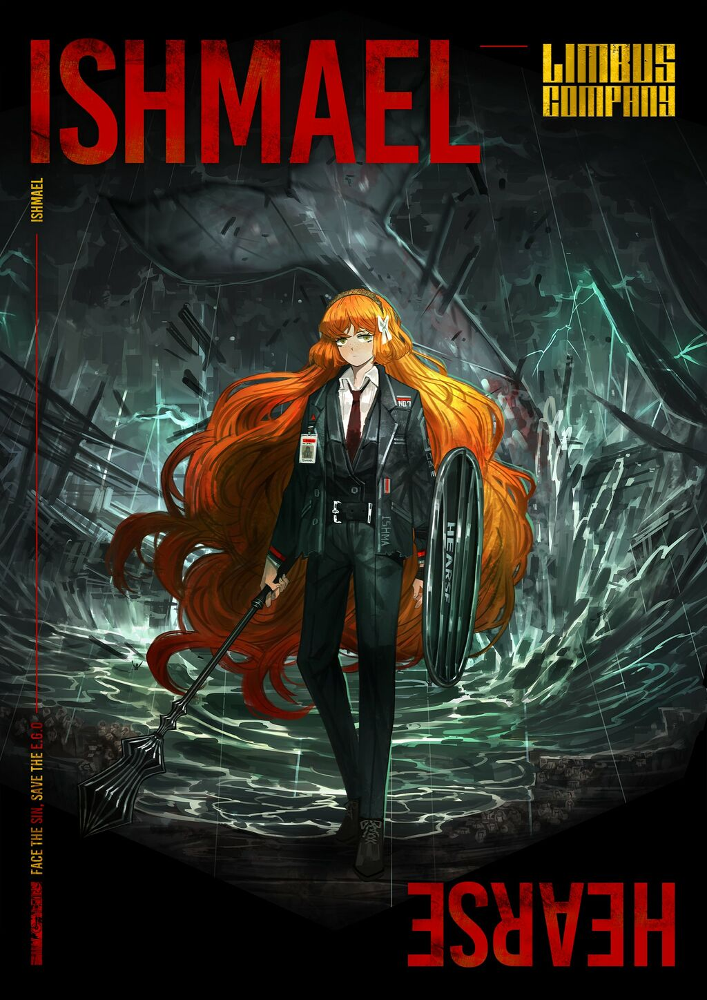 八号罪人 以实玛利 ⛪️，Call me ishmael |
如果可以的话，管我叫以实玛利吧。 身为经理，面对大多各有缺点的罪人，您或许会感到困惑和无力。然而请放心，该罪人是能够不加抱怨地执行各种命令的少数罪人之一。由于该罪人能做出合理的判断，因此若您想要寻求建议，看向她并予以提问应当是一个好办法。但请记住，她是从那片深远且广阔的水域中历经艰难旅途得以生还的罪人，故而其忍耐力可以说是深不见底，然而，一旦与她的关系开始走向歧途，要恢复可能就十分困难了。 原型：小说《白鲸》 |
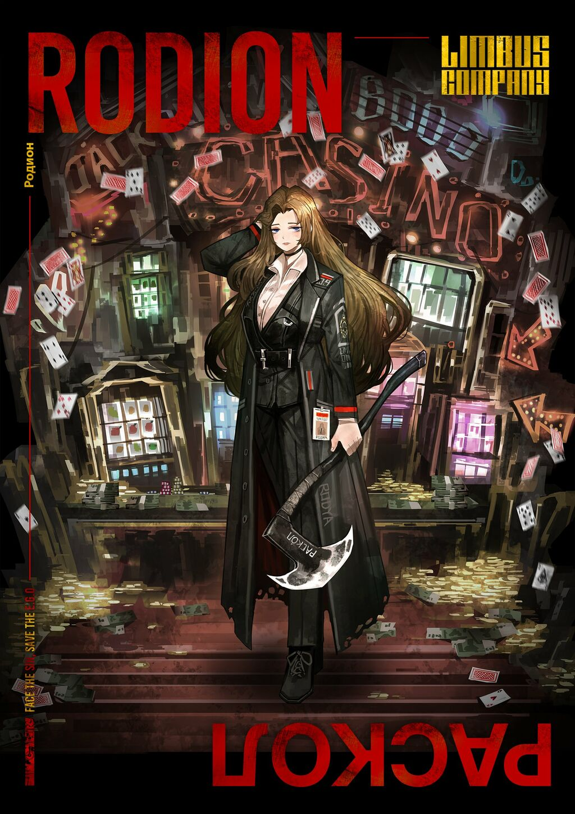 九号罪人 罗佳 🪓，Он бы хотел совсем забыться, все забыть, потом проснуться и начать совсем сызнова |
如果她能忘掉一切，重头再来。 该罪人明显展现出后巷出身所特有的缺陷。她拜金且嗜赌，建议经理对其密切关注。她倾向于用蹩脚的眨眼或玩笑来应付您的指示，建议时常向其展现经理的威严。该罪人会可能不定期地情绪低落，在经理的立场上并不能为其提供帮助，因此静静等候才最有效率。 原型：小说《罪与罚》 |
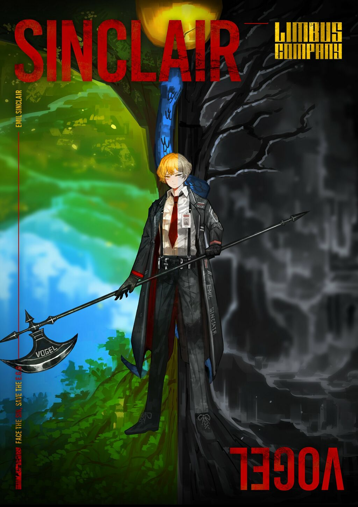 十一号罪人 辛克莱 🐣，Ich wollte ja nichts als das zu leben versuchen, was von selber aus mir heraus wollte. Warum war das so sehr schwer? |
我渴求的，无非是将心中脱颖欲出的本性付诸生活。为什么竟如此艰难呢？ 即使考虑到该罪人处于不稳定的成长阶段，其与人交谈时仍常常紧皱眉头或表现出过度的惊讶。由于其尚不习惯战斗，因此最初可能甚至连内脏都不敢直视。鉴于罪人中不乏具有暴力倾向的人，因此我们建议经理在对待他时以鼓励为主，而不是惩罚。该罪人有时会释放杀气，尽管其本人并不自觉，但我司认为这表明其在我司业务范围内很有潜力。只要给予适当的刺激，我们相信他会有长足的成长。 原型：小说《德米安：埃米尔·辛克莱的彷徨少年时》 |
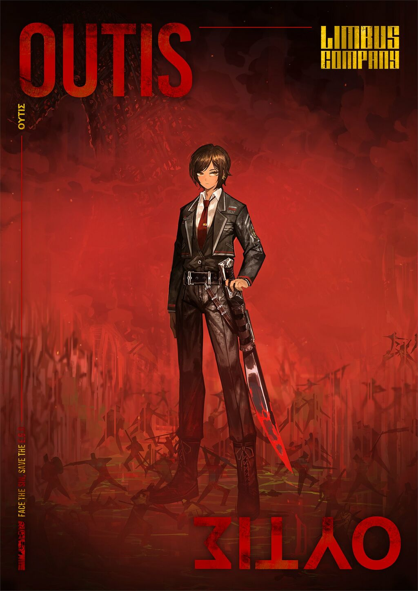 十二号罪人 奥提斯 👢，My name is Outis |
我的名字，是奥提斯 该罪人或许能够成为优秀的顾问，但这取决于经理的能力。然而，考虑到其多管闲事的性格，建议您适当地简短附和。由于她在包括战术在内的多个领域均是专家，因此寻求她的建议非常有效。此外，该罪人还对工坊技术有深入了解，因此您也可以放心地委任她对巴士进行简单的维护工作。 原型：史诗《奥德赛》 |
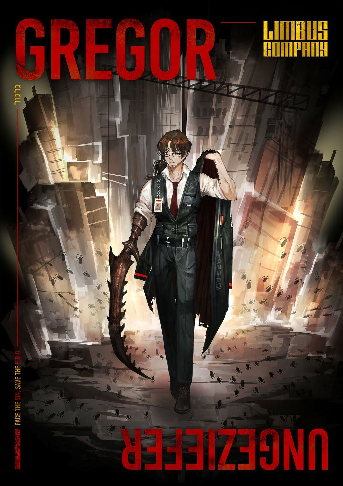 十三号罪人 格里高尔 🪲，ungeheueren Ungeziefer מטמורפוזה |
一天早晨，我从不安的睡梦中醒来，发现自己躺在床上变成了一只巨大的甲虫。 与其他罪人相比，该罪人的性格更好相处。然而，随着情绪激动或者环境急剧变化，其身体的部分、有时甚至全身都可能会变化成类似昆虫（某种鞘翅目，类似于■■■■）的结构。如果您不希望被视为一位粗俗的经理（您不应如此），我们建议您谨慎地管理自己的表情，尽量避免流露出厌恶的情绪。尽管该罪人偶尔会说些愤世嫉俗的话，但只要掌握了技巧，就能与其顺利沟通。与他相处并非难事。 原型：小说《变形记》 |